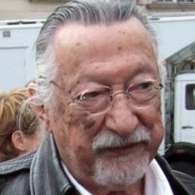

Chapitre 2 · 1948–2014
La préhistoire : prédire le mot suivant
Soixante-dix ans avant ChatGPT, l’objectif était déjà là : estimer la probabilité du mot qui vient. Il manquait la bonne représentation des mots, assez de données et assez de calcul.
1948–2000 : compter pour deviner
Dans A Mathematical Theory of Communication (1948), Claude Shannon génère des « approximations de l’anglais » : il tire chaque mot selon sa fréquence après le mot précédent. C’est un modèle n-gramme : la probabilité d’un mot ne dépend que des n−1 mots qui le précèdent. Plus n grandit, plus le texte devient plausible, mais plus il faut de données pour avoir vu chaque combinaison.
En 1966, au MIT, Joseph Weizenbaum crée ELIZA, un programme qui imite un psychothérapeute avec des règles de réécriture (« Je suis triste » → « Pourquoi êtes-vous triste ? »). Aucun apprentissage, aucune compréhension : pourtant des utilisateurs lui prêtent des sentiments. Weizenbaum en tire une critique durable, aujourd’hui appelée l’effet ELIZA.
Des années 1980 aux années 2000, le traitement automatique des langues devient statistique : reconnaissance vocale, puis traduction automatique (les modèles d’IBM, puis Google Traduction en 2006) reposent sur des n-grammes estimés sur de grands corpus.
1986–2014 : les mots deviennent des vecteurs
- 1986Rétropropagation : Rumelhart, Hinton et Williams popularisent l’entraînement des réseaux multicouches.
- 1997LSTM : Hochreiter et Schmidhuber ajoutent une « mémoire » contrôlée par des portes aux réseaux récurrents, qui oubliaient vite.
- 2003Modèle de langage neuronal : Bengio, Ducharme, Vincent et Jauvin apprennent en même temps un vecteur par mot (un embedding) et la prédiction du mot suivant. Deux mots proches en sens obtiennent des vecteurs proches : le modèle généralise à des phrases jamais vues.
- 2010RNNLM : Tomáš Mikolov montre qu’un réseau récurrent bat les n-grammes en reconnaissance vocale.
- 2012AlexNet : Krizhevsky, Sutskever et Hinton gagnent ImageNet avec un réseau entraîné sur deux GPU. Le deep learning décolle, et avec lui l’usage des GPU.
- 2013word2vec : Mikolov et al. (Google) entraînent des embeddings sur des milliards de mots. Célèbre exemple : vecteur(roi) − vecteur(homme) + vecteur(femme) ≈ vecteur(reine).
- 2014seq2seq : Sutskever, Vinyals et Le (Google) traduisent avec deux LSTM, un encodeur qui lit la phrase et un décodeur qui écrit la traduction. Cho et al. proposent la même année une architecture encodeur-décodeur proche.



Sources de cette page
- C. E. Shannon, A Mathematical Theory of Communication, Bell System Technical Journal, 1948 (section 3).
- J. Weizenbaum, ELIZA — A Computer Program for the Study of Natural Language Communication, CACM, 1966.
- Rumelhart, Hinton, Williams, Learning representations by back-propagating errors, Nature, 1986.
- Hochreiter, Schmidhuber, Long Short-Term Memory, Neural Computation, 1997.
- Bengio et al., A Neural Probabilistic Language Model, JMLR, 2003.
- Mikolov et al., Recurrent neural network based language model, Interspeech, 2010.
- Krizhevsky, Sutskever, Hinton, ImageNet Classification with Deep CNNs, NeurIPS 2012 (version CACM 2017).
- Mikolov et al., Efficient Estimation of Word Representations in Vector Space, 2013.
- Sutskever, Vinyals, Le, Sequence to Sequence Learning with Neural Networks, 2014 ; Cho et al., Learning Phrase Representations using RNN Encoder–Decoder, 2014.